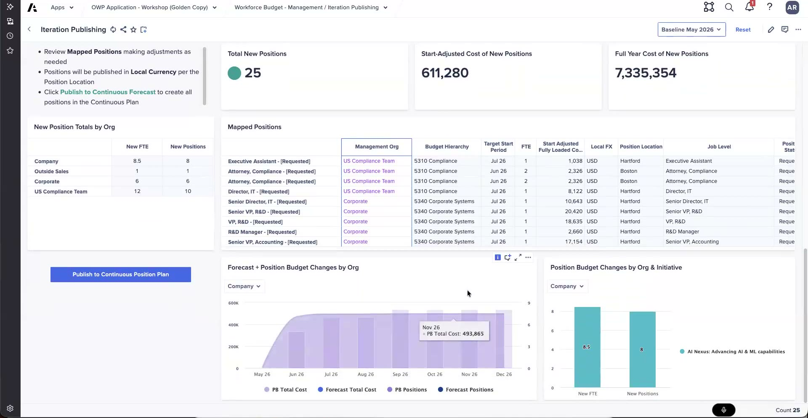

WFB → CPP Bridge
Syncing budgeted positions into the plan
Once the budget is closed on the WFB side, the budgeted positions need to become part of the live plan. That is what the bridge does: it pushes and synchronizes a budget iteration into the CPP, so the positions you budgeted for turn into positions the organization can act on.
Pushing a budget iteration
From the budgeting side you push — or synchronize — a budget iteration into the CPP. The iteration is a version of the budget, commonly a "baseline". Syncing the baseline takes all the planned positions in that iteration and moves them into the plan in one action.
The sync grid
The sync is driven from a grid that lays out every planned position in the iteration, so you can see exactly what is about to move into the plan. Each row is a planned position with the details that define it:
- The planned positions themselves — for example "senior IT specialists" or "VPs of R&D."
- The budget hierarchy they map to.
- Their management org.
- Their target start dates.
- Their costs.

Iteration Publishing in the OWP workshop app — mapped positions ready to publish into the Continuous Position Plan.
Previewing the impact
Before you commit the sync, you can preview the potential impact to the plan. This lets you see what the incoming positions would do before they land, rather than syncing first and finding out afterward. The preview can be scoped:
- By individual org — for example, the impact on the "compliance team."
- Globally — the impact across the whole plan.
An admin action, once the budget is closed
The sync is an admin action, run once the budget is closed. It pushes all planned positions from the iteration into the CPP in one go. Because it commits the whole iteration, you review it in the grid and check the impact preview before running it.
After the sync, those planned positions live in the CPP and can be worked from the CPP workspace — filled, transferred, edited, or departed — as covered on the next page.